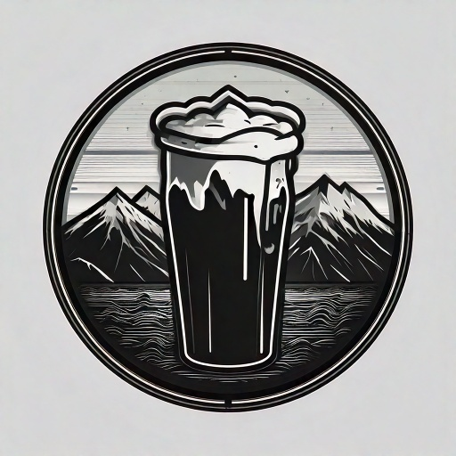
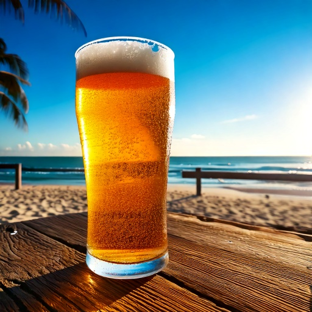
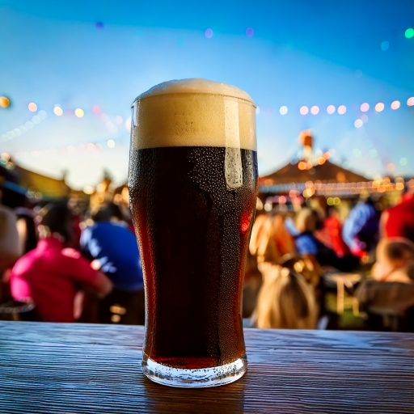
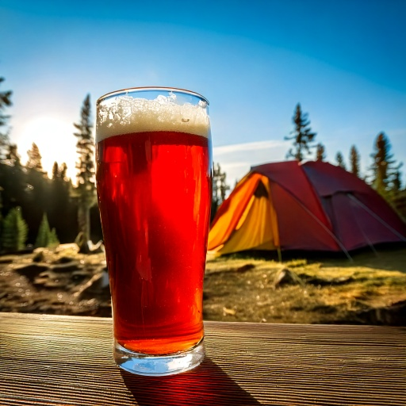
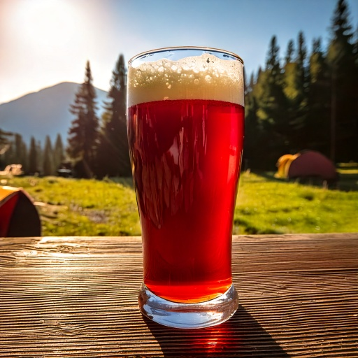

|  |
|---|
Plongez dans l’univers fascinant de la bière, où saveurs, traditions et découvertes se rencontrent. Que vous soyez amateur de bières blondes, brunes, rousses ou IPA, vous trouverez ici des descriptions détaillées, des anecdotes et des conseils pour apprécier chaque gorgée. Bonne visite et santé ! 🍺✨
| Famille | Description | Marques | Image |
|---|---|---|---|
| Blonde | Une bière blonde légère et rafraîchissante, aux arômes délicats de malt et de houblon. Son goût équilibré, légèrement sucré avec une pointe d'amertume, en fait une boisson idéale pour les moments conviviaux. Parfaite pour accompagner des plats légers ou simplement pour se détendre. |
|
 |
| Brune | Riche et intense, la bière brune se distingue par ses arômes profonds de malt torréfié, de café et de chocolat. Son goût souvent plus corsé, avec une légère amertume et des notes caramélisées, en fait une bière de caractère idéale pour les amateurs de saveurs prononcées. |
|
 |
| IPA | L’India Pale Ale (IPA) est une bière au caractère houblonné marqué, offrant une amertume prononcée et des arômes intenses d’agrumes, de fruits tropicaux et de résine. Rafraîchissante et aromatique, elle séduit les amateurs de bières au goût puissant et équilibré. |
|
 |
La bière rouge se caractérise par sa robe ambrée aux reflets rubis et son goût fruité, souvent marqué par des notes de cerise, de caramel et d’épices. Elle offre un bel équilibre entre douceur maltée et légère acidité, idéale pour ceux qui recherchent une bière gourmande et aromatique. |
|
 | |
| Famille | Description | Marques | Image |
Petite suggestion de video pour découvrir la biere : |
|---|
| Bar | Adresse | Map |
|---|---|---|
| V&B | 16 All. Saint-Fiacre, 91620 La ville-du-Bois | |
| Est Ouest | 10 Rue de l'Éperon, 86000 Poitiers |